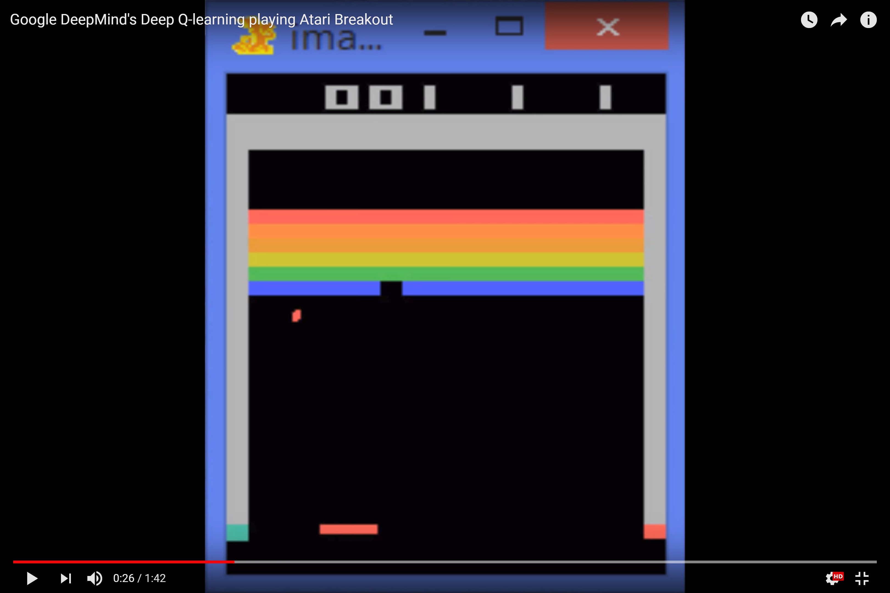

### Update: Prüfungen * Zwei Studierende haben ein gemeinsames Basisthema vorberereitet mit eigener, individueller Erweiterung. * Die Basis wird gemeinsam vorgetragen, also jeder mit ca. 50% Redeanteil. * Danach trägt jeder seine eigene Ergänzung vor. * Die Ausarbeitungen sind individuell. * Die Noten werden auch individuell vergeben.
<img src="img/confusion.png" height="650px"> https://twitter.com/math_rachel/status/991375671648702464
Understanding Alpha(Go) Zero
Oliver Zeigermann
/
@DJCordhose
### Google DeepMind's Deep Q-learning playing Atari Breakout <a href='https://youtu.be/V1eYniJ0Rnk' target="_blank">  </a> <small> https://youtu.be/V1eYniJ0Rnk </small>
### AlphaGo Zero * AlphaGoZero beat all human players and all programs in the Go game * No human knowledge on how to evaluate a position has gone into it * Uses an improved Monte Carlo Tree Search * Expert policy given by Convolutional Neural Network (CNN) to dramatically reduce high branching factor * CNN is trained by self-play <small> http://tim.hibal.org/blog/alpha-zero-how-and-why-it-works/ </small>
<a href='https://applied-data.science/static/main/res/alpha_go_zero_cheat_sheet.png' target="_blank"> <img src='img/rf/alpha_go_zero_cheat_sheet_small.png' height="650px"> </a>
### Alpha Zero * A generalized version of AlphaGoZero * Applies strategies close to AlphaGo Zero * Has been adapted to play Chess and Shogi * Symmetries of Board existing in Go only no longer used * 4 hours of training to reach level of play of Stockfish (on 5000 TPUs) * Could be adapted to any perfect information game with a well defined win condition <small> https://en.wikipedia.org/wiki/AlphaZero </small>
### AlphaZero: Mastering Chess and Shogi by Self-Play with a General Reinforcement Learning Algorithm _The strongest (chess) programs are based on a combination of sophisticated search techniques, domain-specific adaptations, and handcrafted evaluation functions that have been refined by human experts over several decades..._ <small> https://arxiv.org/pdf/1712.01815.pdf </small>
_... In contrast, the AlphaGo Zero program recently achieved superhuman performance in the game of Go, by tabula rasa reinforcement learning from games of self-play._ _ Starting from random play, and given no domain knowledge except the game rules, AlphaZero achieved within 24 hours a superhuman level of play in the games of chess and shogi (Japanese chess) as well as Go, and convincingly defeated a world-champion program in each case._